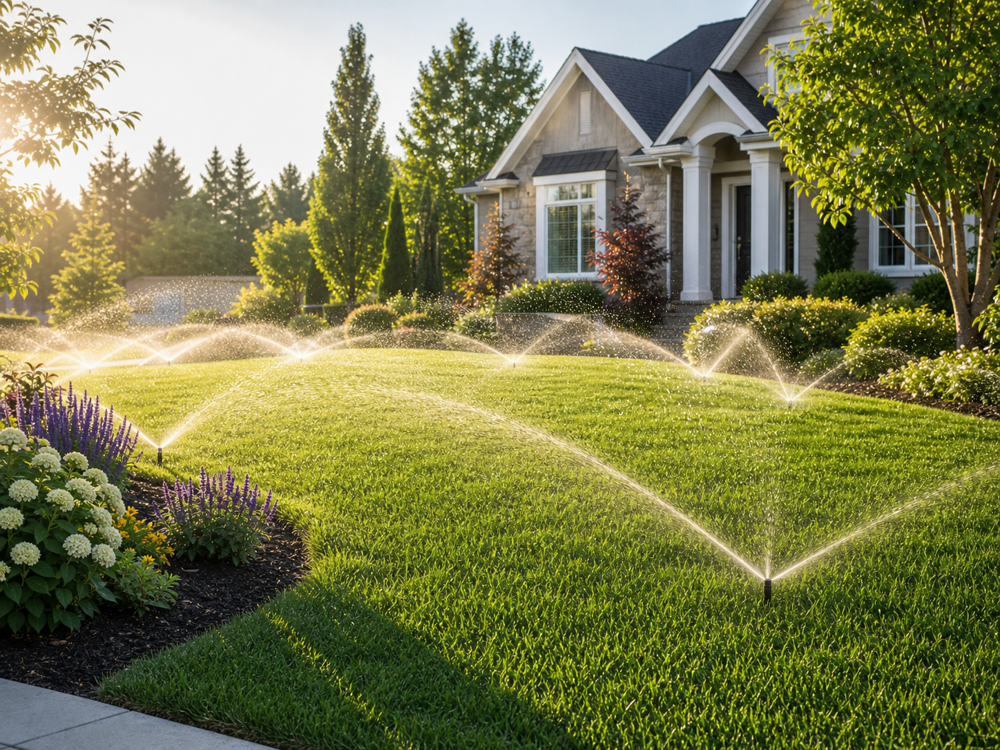
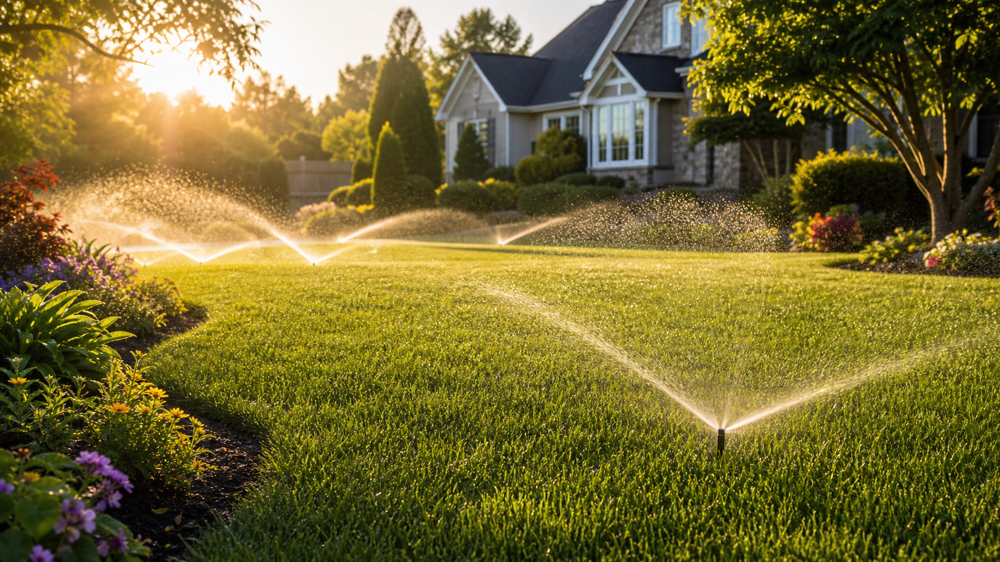
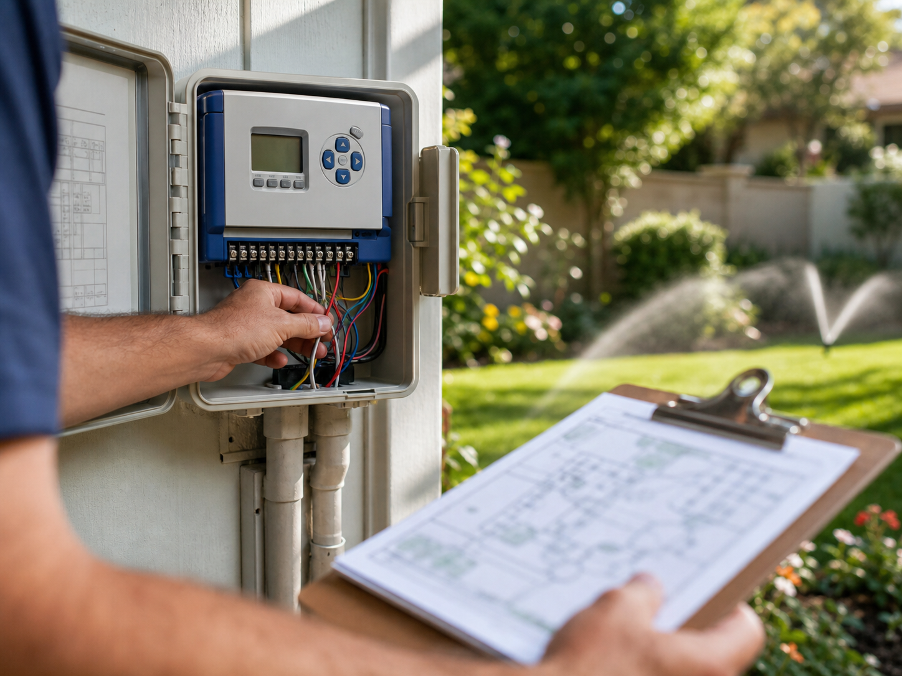
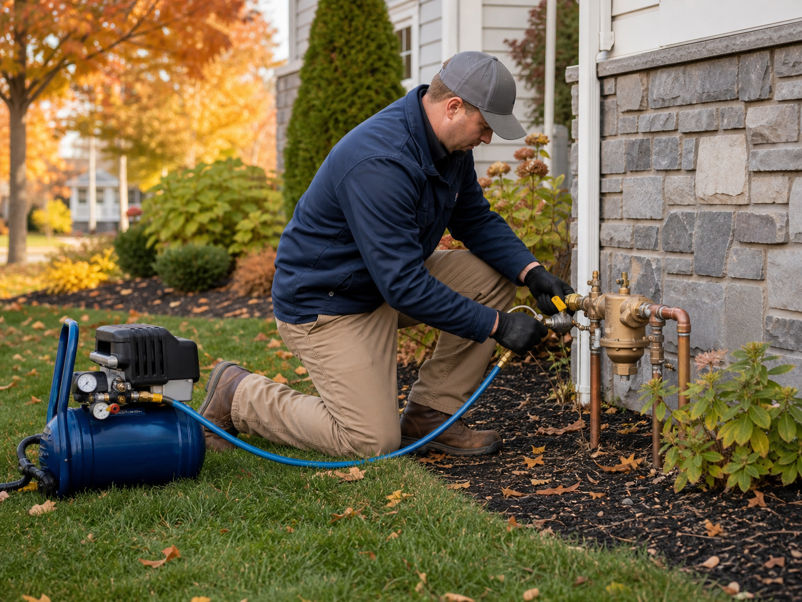

Sprinkler installation
Custom sprinkler system design, zone layout, heads, valves and controller setup for new lawns, renovated landscapes and property upgrades.
Plan my systemSprinkler systems built for every season
All Season Irrigation Systems designs, repairs and maintains sprinkler systems that deliver reliable coverage without soaking sidewalks, flower beds or your water bill.

Ready for a greener, easier lawn?
Tell us whether you need installation, repair, seasonal maintenance or a water-saving upgrade. We will follow up with next steps.
Irrigation and sprinkler services

Custom sprinkler system design, zone layout, heads, valves and controller setup for new lawns, renovated landscapes and property upgrades.
Plan my system
Leak detection, broken heads, low pressure, dry spots, controller issues and zone troubleshooting handled with clean diagnostics.
Fix my sprinkler system
Spring startup, mid-season adjustments and fall winterization help protect the system, reduce waste and keep coverage consistent.
Schedule seasonal careWhy customers call
Sprinkler performance is not just whether water comes out. It is pressure, head spacing, soil type, sun exposure, slope, plant material and schedule. All Season Irrigation Systems turns those details into a practical plan.
Dry spots, pooling and overspray are traced to the source before parts are replaced.
Matched nozzles, smart controller settings and drip zones help reduce wasted watering.
Work areas are kept tidy, trenching is controlled and landscape beds are treated with respect.
Customer reviews
“They found the pressure issue, explained the repair clearly, and had every zone watering evenly before they left.”
Michelle R. Sprinkler repair“The new system covered the whole lawn without spraying the driveway. Clean work and a very professional crew.”
Daniel P. New irrigation system“They handled startup, adjusted the heads, and helped us set a smarter watering schedule for the season.”
Angela M. Seasonal serviceSimple process
We look at sun, slope, soil, water access, existing coverage and the parts of the yard that matter most.
You get a practical recommendation for repairs, upgrades or new installation with clear priorities.
After the work is complete, the system is adjusted for reliable coverage and seasonal maintenance.
Direct answer
The best sprinkler system is one designed around the property instead of a one-size-fits-all kit. A well-designed irrigation system groups lawn and plant zones separately, matches sprinkler heads to each area, uses the right pressure, avoids overspray and runs on a controller schedule that changes with the season.
Questions people ask before booking
If the system has isolated dry spots, broken heads, leaks or controller problems, a repair may be enough. If coverage is poor across the entire property or the layout no longer fits the landscape, redesigning zones may be the better investment.
Sprinkler heads should be checked at spring startup and again during the growing season. Settling soil, mower damage, plant growth and pressure changes can all affect coverage.
Yes, when they are installed and programmed correctly. Weather-aware schedules, rain sensors, seasonal adjustments and correct zone data help prevent unnecessary watering.
Winterization should be scheduled before the first hard freeze. Blowing out the lines helps prevent frozen water from damaging pipes, valves and sprinkler heads.